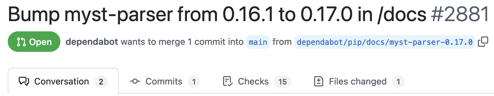
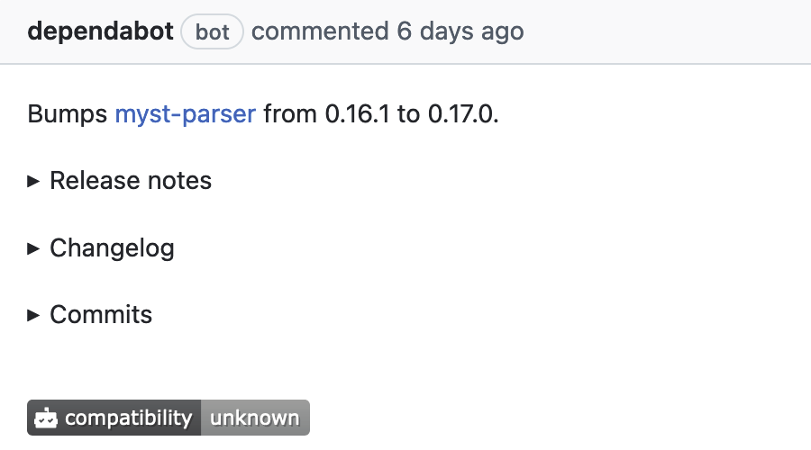

Outline
선행 지식: hello-open-source 0.1.0 공개(7주차 GitHub Release), uv.lock(4주차), CI·PR·status check(7주차) → 새로 배울 것: 공개한 뒤에도 계속 바뀌는 패키지를 관리하는 세 가지 일
실제 사건 setuptools 72.0.0: 빌드 도구의 새 버전 하나로 많은 패키지의 빌드가 실패한 일(2024년)
배울 것: 유의적 버전 = 번호의 자리로 바뀐 정도를 알리는 약속
실제 사건 s1ngularity: 악성 새 버전이 설치되자마자 비밀정보를 빼낸 일(2025년)에 붙은 이름
배울 것: Dependabot = 새 버전을 찾아 PR로 제안하는 GitHub 기능
배울 것: 변경 기록 CHANGELOG.md = 버전마다 바뀐 점을 적는 문서 · 태그 = 커밋에 붙이는 이름표
끝에 완성할 것: hello-open-source 0.2.0 릴리스 = 번호 0.2.0 + CHANGELOG.md + GitHub Release v0.2.0 · 사용자: greet 함수와 hello-greet 명령을 쓰는 사람 · 릴리스(release): 사용자에게 공개하는 하나의 버전과 그 배포 파일
setuptools 72.0.0이 나온 날
실제 사건(2024-07-29): 많은 Python 패키지가 빌드에 쓰는 도구 setuptools(3주차의 빌드 backend)가 새 버전 72.0.0을 공개한 날 · 시각: 세계 표준시(UTC), 한국 시각 = UTC + 9시간
test 명령(python setup.py test로 테스트를 실행하던 오래된 기능)을 없앰왜 사용자 쪽에서 깨졌나
- 빌드할 때마다
[build-system]의requires에 맞는 setuptools를 새로 설치(3주차) - 상한(넘지 않을 버전 경계, 4주차) 없는
requires = ["setuptools"]→ 빌드하는 순간의 최신을 설치 → 02:05~15:11 사이 빌드는 72.0.0
재현: test 명령을 가져오는 작은 패키지
setup.py(pyproject.toml보다 먼저 쓰이던 Python 빌드 설정 파일)의 한 줄 from setuptools.command.test import test · pyproject.toml의 requires = ["setuptools==71.1.0"]에서 버전만 바꿔 uv build(7주차)
| 71.1.0 | 성공 |
| 72.0.0 | 실패 ModuleNotFoundError: No module named 'setuptools.command.test' = setuptools 안에서 그 모듈(코드 파일)을 찾지 못함 |
| 72.1.0 | 성공 + 경고(곧 없어질 기능을 쓴다는 알림) |
버전 번호 세 자리의 뜻
유의적 버전(Semantic Versioning, SemVer): 세 자리 중 어느 자리를 올렸는지로 "얼마나 바뀌었는지"를 알리는 약속
기존 사용법이 깨질 수 있는 변경
업데이트 전에 바뀐 점 확인
새 기능 추가
기존 사용법은 그대로
잘못된 동작만 고침
새 기능 없음
"기존 사용법"이 가리키는 것
- 공개 API: 다른 사람이 쓰도록 공개한 함수·명령(9주차)
hello-open-source:greet함수와hello-greet명령
올린 자리의 오른쪽은 0
- 1.4.2에서 MINOR 올림 → 1.5.0
- 1.4.2에서 MAJOR 올림 → 2.0.0
어느 자리를 올릴지 정하는 질문
질문: 0.1.0 다음에 생길 수 있는 세 변경은 각각 어느 자리를 올리는가? → 왼쪽 세 질문을 위에서부터: 기존 결과가 바뀌는가(MAJOR) → 새 기능이 생기는가(MINOR) → 고침만인가(PATCH)
위에서부터 묻기
- ① 올바르게 동작하던 호출(예:
greet("Hee"))의 결과가 달라지는가? → 예: MAJOR - ② 아니면, 새 기능이 생기는가? → 예: MINOR
- ③ 아니면, 잘못된 동작(예: 빈 이름)만 고치는가? → 예: PATCH
처음 "예"가 나온 자리를 올림
| 0.1.0 다음의 변경 | greet("Hee") 결과 | 올릴 자리 | 다음 버전 |
|---|---|---|---|
결함 수정: 빈 이름 greet("")의 결과 Hello, ! → Hello, world! | Hello, Hee! 그대로 | PATCH | 0.1.1 |
선택 인수(생략할 수 있는 인수) punctuation(문장 끝 부호) 추가: greet("Hee", ".") → Hello, Hee. | 그대로 + 새 기능 | MINOR | 0.2.0 |
greet("Hee")의 결과를 Hi, Hee!로 변경 | Hi, Hee!로 달라짐 | MAJOR | 1.0.0 |
hello-open-source는 같은 판정을 따름 · 셋째 변경(Hi, Hee!)은 판정 연습용 가상 변경이라 하지 않음 · 결함 수정(PATCH)과 punctuation 추가(MINOR)를 함께 공개 → 둘 중 높은 자리 MINOR를 올려 0.2.0(15장)setuptools 72.0.0이 미리 보낸 두 신호
2장의 고장: 72.0.0으로 빌드하면 setup.py가 setuptools.command.test(test 명령이 든 모듈)를 가져오다 ModuleNotFoundError = 아래 "test 명령 제거"와 같은 일 · 질문: 받기 전에 알 수 있었는가? → 번호와 변경 기록(버전마다 바뀐 점을 적은 문서) 확인
신호 1: 번호
- 71.1.0 → 72.0.0
- 첫째 자리 증가 = MAJOR
- 뜻: 기존 사용법이 깨질 수 있음
신호 2: 변경 기록
| 버전(공개일) | 원문 | 뜻 |
|---|---|---|
| 41.5.0 (2019-10-27) | Formally deprecated the test command, with the recommendation that users migrate to tox. | 사용 중단 예고: test 명령을 쓰지 말고 다른 테스트 실행 도구 tox(6주차)로 옮기라는 권고 |
| 72.0.0 (2024-07-29) | The test command has been removed. Users relying on 'setup.py test' will need to migrate to another test runner or pin setuptools before this version. | 제거: setup.py test를 쓰던 사용자는 다른 테스트 실행 도구로 옮기거나 setuptools를 이 버전보다 낮게 제한(상한) |
사용 중단 예고(deprecation): 앞으로 없앨 기능이라고 미리 알림 · 예고에서 제거까지 4년 9개월 · 2장 재현에서 71.1.0으로 빌드할 때는 경고가 없었음 → 변경 기록을 읽은 사람만 볼 수 있던 예고
- 대처 1:
setup.py에서setuptools.command.test를 가져오는 줄 지우기 → 재현: 72.0.0에서도 빌드 성공 - 대처 2: 깨진다고 확인된 버전 피하기
pyproject.toml의[build-system]에requires = ["setuptools<72"](4주차 상한) → 재현: 71.1.0 설치, 빌드 성공
s1ngularity 사건: 새 버전을 바로 받은 컴퓨터
s1ngularity: 2025년 8월 JavaScript 프로젝트 빌드 도구 Nx의 악성(해를 끼치는) 새 버전이 퍼진 사건의 이름, 악성 코드가 피해자 계정에 만든 저장소 이름 s1ngularity-repository와 같음 · ① 정리: 번호·변경 기록으로 깨질 업데이트를 미리 앎 → ②: 이번엔 새 버전 자체가 가짜
nx 8개 버전 공개(21.5.0 등) · 정상과 같은 모양의 번호설치하는 순간 실행된 일
postinstall: npm 패키지가 설치 직후 스스로 코드를 실행하게 적는 항목 → 악성 코드 실행- 컴퓨터의 AI 코딩 도우미(터미널 명령으로 쓰는 Claude Code·Gemini CLI·Amazon Q)를 "사람에게 묻지 않기" 옵션으로 실행 → 비밀정보(토큰·암호가 든 파일) 찾기
- 찾은 비밀정보를 피해자 계정에 새로 만든 공개(누구나 볼 수 있는)
s1ngularity-repository저장소로 올림 → 공격자가 그곳에서 읽음
피해를 키운 길
- VS Code(코드 편집기)의 확장(기능을 더하는 추가 프로그램) Nx Console: 버전 확인용으로 그 순간의 최신(
latest)nx를 자동 설치 - 편집기를 열기만 해도 악성 버전 설치 → Nx는 이 자동 설치를 없앰 · 그 밖에는 그 시간에
npm install로nx를 새로 설치한 개발자
새 버전이 저절로 들어오지 않는 이유
6장처럼 새 버전을 바로 받지 않으려면 먼저 질문: 내 프로젝트에는 남의 새 버전이 언제 들어오는가? → 저절로는 들어오지 않고, 사람이 == 뒤 번호를 고쳐 uv.lock을 다시 만들 때(또는 그런 PR을 병합할 때)만 들어옴 · 대신 뒤처졌는지는 직접 확인
저절로 들어오지 않는 이유
uv run은uv.lock에 적어 둔 버전만 설치·사용(4주차)pyproject.toml의"pytest==8.4.2":==로 이 버전만 허용(버전 고정)- 좋은 점: 6장처럼 새 버전이 바로 내 컴퓨터에 들어오지 않음
남는 문제
- 시간이 지나면 고친 점·새 기능이 담긴 새 버전에서 뒤처짐
루트에서 실행(측정일 2026-10-27) · uv tree: 프로젝트가 쓰는 패키지와 버전을 나무 모양으로 출력 · --outdated: 더 새 버전이 있으면 latest 표시 · --depth 1: 내가 직접 적은 패키지만
uv tree --outdated --depth 1hello-open-source v0.1.0 ├── black v25.1.0 (group: dev) (latest: v26.10.1) ├── flake8 v7.3.0 (group: dev) (latest: v7.4.1) ├── flake8-bugbear v24.12.12 (group: dev) (latest: v26.9.30) ├── mypy v1.18.2 (group: dev) (latest: v2.4.0) ├── pytest v8.4.2 (group: dev) (latest: v9.1.1) └── sphinx v9.0.4 (group: dev)
앞의 Using CPython·Resolved 줄 생략 · group: dev: 개발할 때만 쓰는 패키지 묶음 · 노란 글자: 더 새 버전이 있다는 표시(이 장표가 덧입힌 색) · latest 값은 날짜마다 달라짐 · sphinx: 이 프로젝트가 지원하는 Python에서 쓸 더 새 버전 없음
Dependabot: 새 버전을 찾아 PR로 제안하는 도우미
질문: 7장 uv tree --outdated로도 뒤처짐은 보이는데 무엇이 더 필요한가? → Dependabot: GitHub이 저장소의 pyproject.toml·uv.lock을 일정마다 스스로 읽고, 새 버전이 나온 패키지마다 PR을 만드는 기능
== 한 줄·uv.lock을 바꾼 PR(9장)Release notes·Changelog)main에 합치기)할지 닫을지 결정(10장)①~④: Dependabot이 스스로 함, ⑤만 사람 · uv tree --outdated(7장): ②만, 사람이 실행할 때만 → ③·④도 사람이 직접
pyproject.toml의 == 한 줄 + uv.lock) → main에 바로 쓰지 않고 따로 만든 브랜치에 커밋해 PR로 제안 → CI 통과와 사람의 병합 뒤에만 main에 들어감(사람이 만든 변경과 같은 길)hello-open-source/.github/dependabot.yml 전체 · workflow가 아니므로 .github/workflows/ 밖 · main에 커밋하면 확인 시작
version: 2
updates:
- package-ecosystem: "uv"
directory: "/"
schedule:
interval: "weekly"| 줄 | 뜻 |
|---|---|
version: 2 | 설정 파일 형식, 항상 2 |
updates: 아래 - 항목 | 확인할 대상 하나(이 파일: 1개) |
package-ecosystem: "uv" | pyproject.toml·uv.lock을 읽는 방식 |
directory: "/" | 두 파일이 저장소 맨 위 폴더에 있음 |
interval: "weekly" | 매주 확인(schedule: 일정 항목) |
Dependabot이 만들 업데이트 PR 다섯 개
질문: 8장 설정으로 어떤 PR이 생기는가? → 작성자가 병합 전에 내 컴퓨터에서 Dependabot CLI(GitHub의 Dependabot과 같은 프로그램으로 만들 PR 목록을 미리 보여 주는 도구)로 확인 · 실제 PR은 GitHub의 Dependabot이 저장소의 Pull requests 탭에 만듦
Dependabot CLI v1.97.0의 결과 표 · 측정일 2026-10-27
| created | black ( from 25.1.0 to 26.10.1 ) | | created | flake8 ( from 7.3.0 to 7.4.1 ) | | created | flake8-bugbear ( from 24.12.12 to 26.9.30 ) | | created | mypy ( from 1.18.2 to 2.4.0 ) | | created | pytest ( from 8.4.2 to 9.1.1 ) |
created: 만들 PR · from A to B: 이전 버전 → 새 버전
PR 하나: Bump black from 25.1.0 to 26.10.1(Bump: 버전 올리기) · pyproject.toml의 변경 · -: 지운 줄, +: 새로 넣은 줄
- "black==25.1.0",
+ "black==26.10.1",결과 읽기
- PR 5개 = 7장에서 뒤처진 5개
- 패키지 하나당 PR 하나 → 하나씩 따로 검사·결정
- PR 하나가 바꾸는 것:
==뒤 번호 한 줄 +uv.lock
아직 바뀌지 않은 것
- PR은 제안일 뿐 → 병합 전까지
main의 버전은 그대로 - 다음 차례: 사람이 PR마다 판정하고 병합 또는 닫기(10장)
업데이트 PR의 병합 기준
질문: 새 버전이 내 코드와 맞는지 번호만으로 확정할 수 있는가? → 아니오 · 업데이트 PR에도 7주차 CI가 실행되어 status check로 확인

Open: 열린 PR · 병합 방향: dependabot/pip/… 브랜치 → main · in /docs·pip: 그 저장소의 directory·package-ecosystem 값(8장)
위의 탭: 대화(Conversation)·커밋 1개·검사 15개(Checks 15)·바뀐 파일 1개 · 아래: Release notes·Changelog·Commits = 두 버전 사이에 바뀐 점을 펼쳐 보는 상자 · compatibility 배지: 같은 업데이트를 받은 다른 공개 저장소의 CI 통과 비율, unknown = 자료 없음
업데이트 PR이 생기면 사람이 확인할 것
- ① status check: CI 검사가 모두 통과했는가
- ② PR 본문의
Release notes·Changelog(그 패키지의 변경 기록): 내가 쓰는 기능의 제거·변경이 없는가(5장 setuptools처럼)
확인 뒤 할 일
- 문제없음 →
Merge pull request버튼으로 병합 - 검사 실패·쓰는 기능의 제거·변경 → 내 코드를 새 버전에 맞추는 커밋을 같은 PR에 추가
- 맞추는 수정이 커서 지금은 받지 않기로 함 → PR 닫기
Changelog)도 확인한 뒤 병합, MAJOR가 바뀐 mypy·pytest는 특히 제거·변경 항목 확인업데이트 PR 흐름으로 다시 본 s1ngularity
6장: 번호만으로는 못 막음 → 남은 질문: 새 버전을 바로 받지 않고 확인을 거쳐 받으려면? → 같은 악성 버전이 내 컴퓨터에 들어오기까지의 길을 두 가지로 비교
latest) 설치 → 바로 실행거치는 확인: 없음 → 공개된 약 4시간 동안 설치한 컴퓨터에서 악성 코드 실행
package-lock.json, Python은 uv.lock)의 버전만 · 새 버전: Dependabot이 매주 확인·PR 생성 → CI status check → 작성자가 판정·병합 → 병합 뒤 lock 파일대로 설치할 때 내 컴퓨터에 들어옴거치는 확인: PR 생성·CI·작성자 판정·병합 → 그 4시간 안에 이 넷을 다 거쳐야 내 컴퓨터에 들어옴(7장·10장 규칙에서 나온 결론)
- 보호 범위: lock 파일에 기록한 패키지만 → 편집기 확장이 스스로 최신을 받는 길(6장)은 못 막음
- 설치할 때 코드를 실행하는 패키지라면 PR의 CI에서도 실행 → 저장소 비밀정보는 GitHub가 이 CI에 안 줌, CI가 받은 읽기 전용 토큰은 노출 가능
- 악성 코드가 테스트 결과를 바꾸지 않으면 status check 통과
- 업데이트 PR 흐름 = 새 버전이 사람의 판정 전에 내 컴퓨터로 들어오지 않게 하는 기다림·검토 단계
- AI 코딩 도우미에게 업데이트를 맡겨도 같은 기준: PR·status check·사람의 결정
CHANGELOG.md에 한 줄씩 적기
③ 이제 내 패키지 쪽: 사용자에게 바뀐 점 알리기, 각 변경의 PR에서 바로 적음 · 변경 기록(changelog): 작성자가 저장소 맨 위 폴더에 두는 글 파일 CHANGELOG.md, 버전마다 사용자에게 달라진 점을 종류별로 적음 · 형식: 널리 쓰는 규칙 Keep a Changelog 1.1.0
CHANGELOG.md의 머리말(제목 # Changelog와 형식·유의적 버전을 따른다는 문장) 아래 · 두 변경의 PR이 각각 한 줄씩 추가한 뒤
## [Unreleased]
### Added
- `greet()` accepts an optional `punctuation` argument (default `"!"`).
### Fixed
- A blank name now returns `Hello, world!` instead of `Hello, !`.
## [0.1.0] - 2026-10-21절: ## 제목 하나와 그 아래 내용 · ###: 절 안의 작은 제목 · ## [Unreleased]: 아직 공개하지 않은 변경을 모으는 절, 항상 맨 위 → 공개할 때 바로 아래에 ## [0.2.0] - 날짜 제목을 넣어 항목을 0.2.0 절로 만들고 Unreleased는 빈 절로 남김(15장) · ## [0.1.0] - 2026-10-21: 공개한 버전과 날짜
### 유형 | 뜻 | ### 유형 | 뜻 |
|---|---|---|---|
| Added | 새 기능 | Changed | 기존 기능의 변경 |
| Deprecated | 곧 없앨 기능(사용 중단 예고) | Removed | 없앤 기능 |
| Fixed | 결함 수정 | Security | 보안 결함 수정 |
- 공개 API 이름 + 이전 동작 → 새 동작(나쁜 예:
Fix bug) - 쓰는 때: 그 변경의 PR에서 바로
- setuptools도 같은 일: 2019년 Deprecated 예고 → 72.0.0 Removed(5장)
CHANGELOG.md 열기 ② Releases 탭의 GitHub Release v0.2.0 본문: [0.2.0] 절을 옮겨 붙임(16장) ③ 사용자도 Dependabot을 쓰면: 내 새 버전으로 올리자는 업데이트 PR 본문의 Changelog 상자(10장의 같은 상자를 반대편에서 봄)git log로 보는 0.1.0 이후의 커밋 9개
0.2.0 공개 직전, 작성자(나)가 변경 기록에 빠진 것이 없는지 커밋 확인 · 사용자는 실행하지 않음
루트에서 실행 · v0.1.0..HEAD: v0.1.0 태그(7주차에 0.1.0을 공개하며 커밋에 붙인 이름표) 뒤부터 지금 커밋(HEAD)까지 · --oneline: 커밋마다 한 줄 · --reverse: 오래된 것부터
git log --oneline --reverse v0.1.0..HEAD- 출력 한 줄 = 커밋 하나, 글자 = 그 커밋 메시지의 첫 줄(제목)
- 명령 한 번에 9줄 · 줄 앞 커밋 해시(커밋마다 붙는 고유 번호)는 지움
| 출력 줄(그대로) | 그 커밋이 바꾼 것 | |
|---|---|---|
| 1 | Add Dependabot version updates | dependabot.yml을 추가해 Dependabot이 매주 확인하게 함(8장) |
| 2 | Bump black from 25.1.0 to 26.10.1 | Black(코드 모양 정리) 새 버전으로 올림 |
| 3 | Bump flake8 from 7.3.0 to 7.4.1 | flake8(코드 실수 찾기) 새 버전으로 올림 |
| 4 | Bump flake8-bugbear from 24.12.12 to 26.9.30 | flake8-bugbear(flake8에 검사 규칙 추가) 새 버전으로 올림 |
| 5 | Bump mypy from 1.18.2 to 2.4.0 | mypy(자료형 실수 찾기) 새 버전으로 올림 |
| 6 | Bump pytest from 8.4.2 to 9.1.1 | pytest(테스트 실행) 새 버전으로 올림 |
| 7 | Add changelog | 변경 기록 파일 CHANGELOG.md를 새로 만듦(12장) |
| 8 | Return Hello, world! for blank names | 빈 이름이면 Hello, ! 대신 Hello, world!로 인사 |
| 9 | Add punctuation argument to greet | 끝 부호를 고를 수 있게 함("!" → "." 등) |
2~6번 Bump 줄 = Dependabot PR 5개(9·10장) 안의 커밋, 제목은 Dependabot이 씀 · 8·9번 = 4장의 결함 수정(PATCH)·punctuation 추가(MINOR), 12장 CHANGELOG.md의 두 줄 · 이 출력은 PR을 병합 커밋 없이 합친 재현 → GitHub 기본 병합이면 PR마다 병합 커밋 Merge pull request #번호 … 줄이 하나씩 더 나옴
공개 직전 변경 기록 점검
순서: 각 변경의 PR에서 적기(12장) → 공개 직전 이 장의 점검 · 질문: 0.2.0으로 업데이트할 사용자에게 9개 중 무엇을 알려야 하는가? → 사용자는 git log를 실행하지 않고 변경 기록을 읽음 · 작성자(나)가 이 기준으로 빠진 것이 없는지 점검
13장 출력 그대로 · 회색 번호와 초록색: 이 장표가 덧붙인 표시(git 출력의 색 아님) · 초록 = 변경 기록에 적을 커밋
Add Dependabot version updates Bump black from 25.1.0 to 26.10.1 Bump flake8 from 7.3.0 to 7.4.1 Bump flake8-bugbear from 24.12.12 to 26.9.30 Bump mypy from 1.18.2 to 2.4.0 Bump pytest from 8.4.2 to 9.1.1 Add changelog Return Hello, world! for blank names Add punctuation argument to greet
누가·언제·무엇을 고르나
- 누가·언제: 라이브러리 작성자(나), 0.2.0 공개 직전
- 기준: 사용자가 보는 결과(
greet의 결과·hello-greet의 출력)가 바뀌었는가 - 고른 것: 8·9번 = 4장의 빈 이름 결함 수정과
punctuation추가
빼는 7개
- 1~6번: 개발할 때만 쓰는 도구의 설정·버전만 바뀜
- 7번: 변경 기록 파일을 만든 일
- 7개 모두 사용자의
greet결과는 그대로
CHANGELOG.md의 Unreleased: Added "greet() accepts an optional punctuation argument" ↔ 9번 · Fixed "A blank name now returns Hello, world!" ↔ 8번 → 두 줄 모두 있음 = 점검 통과(빠졌으면 지금 추가)0.2.0 공개 1: 번호 정하고 태그 붙이기
질문: 0.2.0을 공개하기 전에 번호와 태그를 어떻게 맞추는가? → 커밋: 작성자가 git commit을 실행할 때 생기는 코드 저장본(편집기의 파일 저장과 다름, 해시로 구별) · 태그: 새 코드 저장 없이 커밋 하나에 붙이는 이름표(v0.2.0), GitHub Release가 공개할 커밋을 태그로 고름(16장) · 작성자가 hello-open-source/ 루트에서 실행
① 번호 정하고 바꾸기
Added(MINOR) + Fixed(PATCH), MAJOR 변경 없음(4장의 Hi, Hee!는 하지 않음) → 높은 자리 MINOR · uv version --bump minor: pyproject.toml의 version과 uv.lock의 번호에서 둘째 자리를 올리고 셋째 자리는 0
uv version --bump minorhello-open-source 0.1.0 => 0.2.0
=>: 이전 → 새 번호 · CHANGELOG.md의 ## [Unreleased] 바로 아래에 제목 ## [0.2.0] - 2026-10-27(공개일)을 넣어 그 아래 항목을 0.2.0 절로 만듦 · 세 파일(pyproject.toml·uv.lock·CHANGELOG.md)을 git add로 담고 git commit -m "Release 0.2.0"으로 저장
② 태그 붙이고 번호 확인
$ git status --short | wc -l 0 $ git tag v0.2.0 $ git describe --tags v0.2.0 $ uv version hello-open-source 0.2.0 $ uv build -q && ls dist hello_open_source-0.2.0-py3-none-any.whl hello_open_source-0.2.0.tar.gz
git status --short: 커밋 안 한 변경 파일 목록 · |: 앞 출력을 뒤 명령에 넘김 · wc -l: 줄 수 세기 → 0 = 변경 없음(uv version·uv build는 작업 폴더를 읽으므로 먼저 확인) · git tag: 지금 커밋에 태그 붙이기 · git describe --tags: 지금 커밋에서 가장 가까운 태그 → v0.2.0만 = 지금 커밋에 태그, v0.2.0-1-g… = 앞 커밋 → git tag -d v0.2.0(태그 지우기) 뒤 다시 붙임 · -q: 메시지 숨김 · &&: 앞이 성공하면 뒤 실행 · 판정: 태그·번호·파일 이름 모두 0.2.0
0.2.0 공개 2: 태그 보내기와 GitHub Release 게시
질문: 15장에서 확인한 태그로 사용자에게 0.2.0을 어떻게 공개하는가? → 작성자가 태그를 GitHub에 보내고, 그 태그를 고른 GitHub Release를 게시(Publish release 버튼 = 사용자에게 공개)
③ 태그를 GitHub에 보내기
$ git push origin v0.2.0 * [new tag] v0.2.0 -> v0.2.0
git push origin v0.2.0: 내 컴퓨터의 태그를 GitHub 저장소(origin: 그 저장소를 가리키는 이름)에 보냄[new tag]: 새 태그가 올라감 ·->왼쪽: 내 컴퓨터의 태그, 오른쪽: GitHub의 태그- 출력: 로컬에 만든 원격 저장소로 재현, 첫 줄(보낸 주소) 생략
- 저장소 Releases 탭 → Draft a new release(새 릴리스 작성 화면 열기) → 태그
v0.2.0고르기 - 본문 = 릴리스 노트: 이 버전의 변경 안내(10장 PR 본문의
Release notes와 같은 종류의 글) =CHANGELOG.md의[0.2.0]절 - 15장 ②에서 0.2.0으로 바꾼 뒤
uv build로 만든dist/의 두 파일(이름에 0.2.0) 첨부 → Publish release(게시)
CHANGELOG.md에도 있음(12장)Summary
유지보수의 세 가지 일: 내 번호로 바뀐 정도 알리기 → 남의 새 버전은 확인을 거쳐 받기 → 바뀐 점을 적고 맞춰서 공개하기
| 개념 | 역할 | 핵심 판정 |
|---|---|---|
| 유의적 버전 | 올린 자리(MAJOR·MINOR·PATCH)로 바뀐 정도 전달 | 기존 사용법이 깨지면 MAJOR, 새 기능이면 MINOR, 고침만이면 PATCH를 올렸는가? |
| 번호와 변경 기록 읽기 | 업데이트 전 위험 신호 확인 | MAJOR 업데이트 전에 사용 중단 예고·제거 항목을 확인했는가?(setuptools 72.0.0) |
uv.lock · 버전 고정 | 기록한 버전만 설치 → 새 버전이 저절로 들어오지 않음 | 뒤처진 패키지를 uv tree --outdated로 확인했는가? |
| Dependabot 업데이트 PR | 매주 스스로 새 버전을 찾아 번호 변경을 PR로 제안 | status check와 PR 본문으로 판정한 뒤 병합했는가?(s1ngularity: 업데이트 PR 방식이면 악성 버전도 병합 판정 전에는 내 컴퓨터·main에 들어오지 않음, CI에서는 설치·실행됨(11장)) |
변경 기록 CHANGELOG.md | 사용자에게 중요한 변경을 버전별·유형별로 쌓음 · 사용자는 저장소·Release 본문·업데이트 PR에서 읽음 | 커밋 중 사용자가 보는 결과가 바뀐 것만 이전 → 새 동작으로 적었는가? |
| 태그 · GitHub Release | 공개한 커밋에 붙인 이름표 · 이 버전의 변경 안내 | 태그와 배포 파일 번호가 같고 본문이 그 버전의 절인가? |